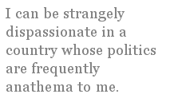

Anna Evans
Propemptikon for my Brother
In rare mid-England snow, I marked
your footprints like a page. Awkward
on my new continent, you confuse
trash and recycling, use words
my friends don’t understand. Stay
longer, brother. When we were younger,
no one aimed planes like missiles;
the world seemed larger and better lit.
Now I keep my feet grounded
and my family close under the blue
sky and jeweled trees, not far
from the smell of money
and hamburgers. Move to my suburb;
we can all be Americans. But if I can’t
persuade you, let’s hope the only scare
on your flight home is some bad
weather turbulence. Return for Christmas:
outrageous lights, relentless adverts
for the electronic goods you salivate
over like a kid with a gingerbread
house. Let’s pretend the Atlantic Ocean
is a stream with stepping stones. In Winter
it always snows here; my footsteps still fit
in yours: we can make a different way home.
[ Published by Exit 13, 2006 ]
English HeavenAnd think, this heart, all evil shed away,
A pulse in the eternal mind, no less
Gives somewhere back the thoughts by England given;
Her sights and sounds; dreams happy as her day;
And laughter, learnt of friends; and gentleness,
In hearts at peace, under an English heaven.
— Rupert Brooke
You have to sing God Save The Queen and score
a cricket match to get in through the gates.
The most important meal is tea, at four,
with fish paste sandwiches on Dalton plates.
If you can’t walk to somewhere, there are trains;
they’re clean and fast and always run on time.
The lawns are green although it seldom rains.
There are no guns; indeed, there is no crime.
But I would miss American TV,
and German cars, French cheese; who but the Dutch
grow tulips? Plus, in micro-circuitry
the Japanese have contributed much.
If I should die, I’d open wide the doors;
this separate heaven gimmick leads to wars.
[ Published by Exit 13, 2006 ]
As You Like It
I cast you as the main romantic lead
in what I always knew was just a play,
and one of words not deeds. We didn’t need
the actual kisses. It was enough to say
you yearned to give them, I yearned to receive,
and as the audience in this affair
I was allowed to cherish, lust and grieve
while never laying soul nor substance bare.
Yet now that you’ve refused to act your part,
missed several cues, torn up the script I wrote,
don’t fool yourself my tears are more than art —
that girl and I have always been remote.
As Thespians are sadly prone to do,
my character loved yours; I don’t love you.
[ Finalist in the 2005 Howard Nemerov Sonnet Contest
Published by Measure, Spring/Summer 2006 ]
No Coffee Please — We’re British
Recently I was on vacation in Aruba, and while my husband and I were sipping Merlot and eating satay in a bar — Eet Café The Paddock, if you happen to know the island — a group of Dutch marines came in dressed as their idea of stereotypical Americans. They wore garish tropical shirts, khaki shorts, white ankle socks with sandals, sunglasses and cowboy hats, so that they resembled that sheriff character in the old James Bond film, The Man with the Golden Gun. Their idea of behaving like American tourists was to dance obnoxiously and chant “USA” whenever a song with an American connection came on the juke box. It was amusing, but also somewhat disturbing. I’m a British woman, but I’ve lived in New Jersey for over seven years now, and this is not how my many American friends actually behave. It started me thinking about national stereotypes, indeed stereotypes in general, and what it means to me to be British, given that I no longer live in, and rarely visit, my native country.
In his excellent book, The Black Swan, Nassim Nicholas Taleb endorses my suspicions that “sex, social class, and profession seem to be better predictors of someone’s behavior than nationality…e.g. a philosopher from Peru resembles a philosopher from Scotland more than a janitor from Peru.” It follows that I should resemble an American poet more closely than a British farmer, say. But is that true?
I certainly don’t believe I am stereotypically British. I’m not much one for the “stiff upper lip” and I don’t wear cardigans and knee socks like a spinster in an Agatha Christie novel. (My mother does, on the other hand, and everyone in my family does consume copious quantities of tea.) But when I think about it, I can produce a couple of ways in which my Britishness and my expatriation may affect my poetry.
Firstly there is the interesting question of whether rhyme and meter, often my versification tools of choice, are more prevalent and respected across the other side of the Atlantic Ocean. A rigorous proof of this is outside the scope of this essay, but I can certainly offer some evidence and justification, beginning with a comparison of the current Poet Laureates of both countries. I had the good fortune to attend a reading by Andrew Motion, current UK Poet Laureate, and I know he uses meter and rhyme, although by no means exclusively. One in three poems appearing on his official Poetry Archive page uses meter and rhyme. Charles Simic, on the other hand, is not noted for his work in received forms, and while I am not going to claim he has never written in meter and rhyme, a quick perusal of my anthologies does not yield a metrical poem by him. (In fairness the previous American Poet Laureate, Donald Hall, is revered for his facility with meter.)
At my Bennington College MFA residencies in Vermont I have now been part of four separate workshop groups, with a cumulative total of over twenty other students. At no workshop has any student besides myself offered a poem in meter and rhyme for critique. Critiques I have received on my metrical poems, on the other hand, have tended toward the dismissive — my sonnets have been deemed “strait-jacketed”, “forced” and “old-fashioned.”
American venues which publish primarily or exclusively free verse abound, while those that offer the reverse have a tendency to go the way of The Formalist and Edge City Review. (It will be interesting to see if Measure, the new high end journal devoted to metrical poetry, can survive.)
Greater authorities than I have theorized on why exactly this should be so. Whitman is often credited with being one of the fathers of free verse, and clearly he is as American as one can hope to find. (Eliot however, is another, and while American by birth he considered himself an Englishman.) Nevertheless, as Steele puts it in Missing Measures, there was indubitably an “American rejection of what Emerson called ‘the courtly muses of Europe.’” This followed naturally from the American rejection of many things English, including — arguably with justification — colonial rule and quaint notions of spelling, and — somewhat more sadly — cricket, soccer and tea.
Returning to my poetry, another element which distinguishes me from an American poet is related to theme. Now, most poets mine their childhoods for material, so I am not unusual in that. However, there is an extra frisson when writing about a childhood that took place in a country different to the one where you currently live. At the risk of generating my own stereotype, this would seem to be especially true of the USA, a country with a huge appetite for ethnicity in all its shapes and forms. It does not surprise me that my poems which refer explicitly to England in some way seem to be among the most well-received, even those, somewhat ironically, which use meter and rhyme.
In addition to the theme of Englishness I can discern another thread running through my work — that of the outside observer documenting events as seen from an almost journalistic perspective. This is of course not related to my own nationality, but to the fact that I am not American. (My children, of course, consider themselves American despite their British passports.) I can be strangely dispassionate in a country whose politics are frequently anathema to me, simply because as a non-citizen, I can’t vote. There is a different kind of irony in the fact that these poems, often in free verse and occasionally verging on the polemic, are usually less well-received.
Maybe there is a lesson here for me as I move forward. The problem with observing something is that there is a temptation to find a simple explanation for it. As Taleb states again: “This nationality business helps you make a great story and satisfies your hunger for ascription of causes.” But, rather like those Dutch marines in Aruba, the risk is to present things as far simpler than they really are, and as a result, to appear lacking in both intelligence and compassion. I receive over 500 metrical poems per issue to consider for the Barefoot Muse, and most of those are from Americans. Human nature is infinitely richer than geography might suggest. Now excuse me, I need to go and make some more tea.
Anna Evans is a British citizen but permanent resident of NJ, where she is
raising two daughters. Her poems have appeared in journals including Rattle,
The Harvard Review, The Formalist, The Evansville Review, Measure and
e-zines such as Apple Valley Review. She has been nominated three times for
a Pushcart Prize and was a finalist in the 2005 Howard Nemerov sonnet award.
She is editor of the formal poetry e-zine The Barefoot Muse and is currently
enrolled in the Bennington College MFA Program. Her first chapbook “Swimming”
was published in March 2006 by Maverick Duck Press.
|